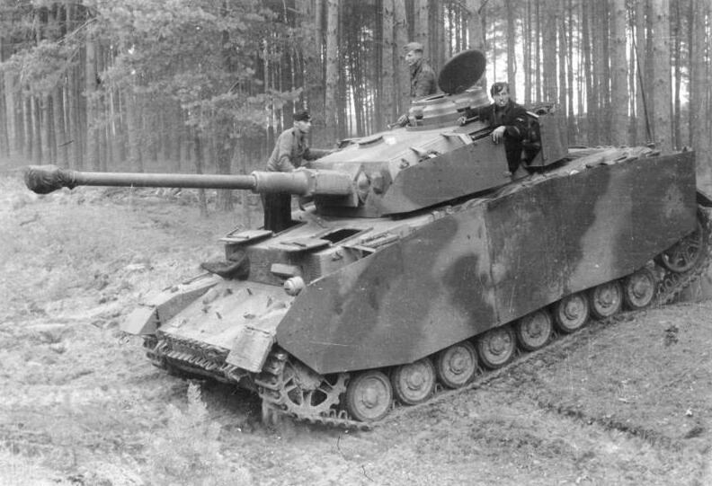
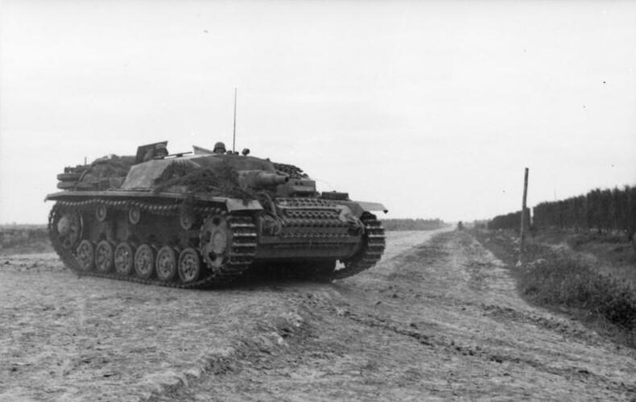
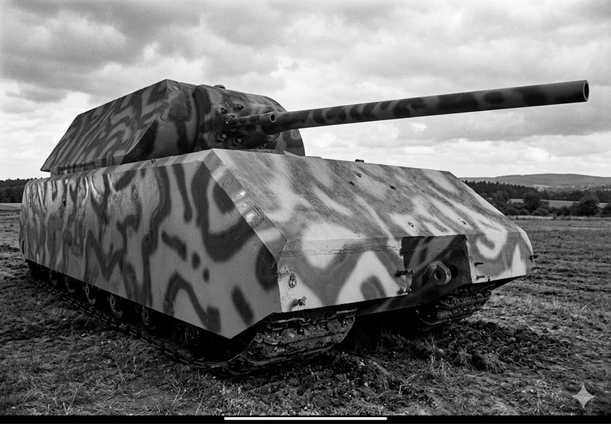

Ein schwerer Panzer, der durch seine Panzerung Legendenstatus erreichte.
Entwickelt als Antwort auf den T-34.
Das Rückgrat der deutschen Panzertruppen.
Der erfolgreichste deutsche Panzerjäger.
Das schwerste jemals gebaute gepanzerte Fahrzeug.